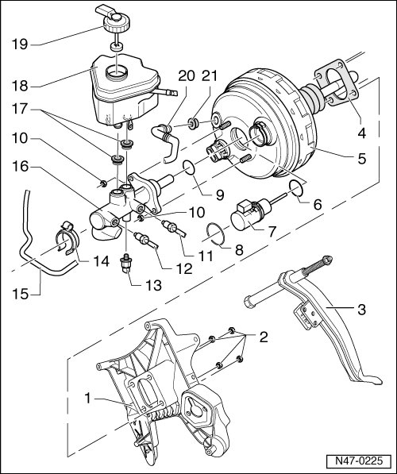

Brake Master Cylinder: Locations
Brake Booster/Master Cylinder Assembly Overview
• Use only NEW brake fluid. Observe information on brake fluid reservoir!

1 Mounting bracket for pedal assembly
2 Self-locking nut, 25 Nm
• Always replace after removal.
3 Brake pedal
4 Gasket
• For brake booster.
5 Tandem brake booster
• Including brake pressure release solenoid (F84) and brake pressure magnetic coil (N247) (not interchangeable).
• On gas engines, vacuum is supplied from intake manifold.
• Vehicles with gas engines and automatic transmissions are equipped with a brake system vacuum pump.
• On diesel engines, a vacuum pump is installed for vacuum creation.
• Function test:
- With engine switched off, press brake pedal firmly several times (to deplete vacuum in tool).
- Press and hold the brake pedal with average foot pressure and start the engine. If brake booster is working properly, pedal will be felt to give noticeably under foot (booster assistance becomes effective).
• Replace as a unit in the event of malfunction (previously, check all vacuum lines).
• Removing and installing, refer to --> [ Brake Booster ] Brake Booster.
6 Seal
7 Brake booster membrane position sensor (G420)
• Removing and installing, refer to --> [ Brake Booster Membrane Position Sensor ] Service and Repair.
• Discontinued from calendar week 48/06.
8 Snap ring
9 Seal
10 Self-locking nut, 25 Nm
• Always replace after removal.
11 Brake line, 14 Nm
• Brake master cylinder/primary piston circuit to hydraulic control unit.
• Identification at hydraulic unit - DK -.
12 Brake line, 14 Nm
• Brake master cylinder/secondary piston circuit to hydraulic unit.
• Identification at hydraulic unit - SK -.
13 Brake pressure sensor (G201)
• Removing and installing, refer to --> [ Brake Pressure Sensor 1 ] Service and Repair.
• In the Electronic Stabilization Program (ESP) unit from calendar week 48/06.
14 Bracket
15 Brake line
• To left front brake caliper.
16 Brake master cylinder
• Cannot be serviced. Replace as a complete unit if malfunctioning.
• Removing and installing, refer to --> [ Brake Master Cylinder ] Brake Master Cylinder.
17 Sealing plugs
• Lubricate with brake fluid and press into brake fluid reservoir.
18 Brake fluid reservoir
19 Cap
20 Vacuum hose
• Insert into brake booster.
21 Sealing plugs
• Connection for vacuum hose.